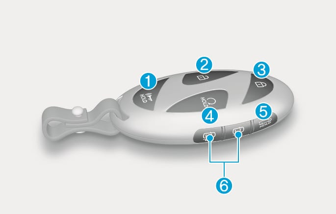

스마트 키 사용하기
스마트 키를 이용해 보다 편리하게 차량 기능을 활용할 수 있습니다.

2C_SmartKeyOverview
-
Ɨ 비상 경보 -
ď 도어 잠금 해제 -
Ď 도어 잠금 -
ƙ 원격 시동 -
û 테일게이트 잠금 해제/열림 -
Ē /ē 원격 전후진(사양 적용 시)
-
모든 도어가 닫힌 상태에서만 스마트 키를 사용해 도어를 잠그거나 잠금 해제할 수 있습니다.
-
도어 핸들의 잠금/잠금 해제 센서는 스마트 키가 앞좌석 도어 핸들로부터 1 m 이내에 있는 경우에만 작동합니다.
-
다음과 같은 경우 스마트 키가 작동하지 않을 수 있습니다.
-
작동 가능 거리(약 10 m 내외)를 벗어난 경우
-
기온이 낮거나 스마트 키의 배터리 교체가 필요한 경우
-
다른 차량이나 사물에 가려 전파가 원활히 전달되지 않는 경우
-
무단 침입이나 도난 등 사고를 방지하려면 도어를 잠근 후 도어 핸들을 당겨 잠금 상태를 확인하십시오.